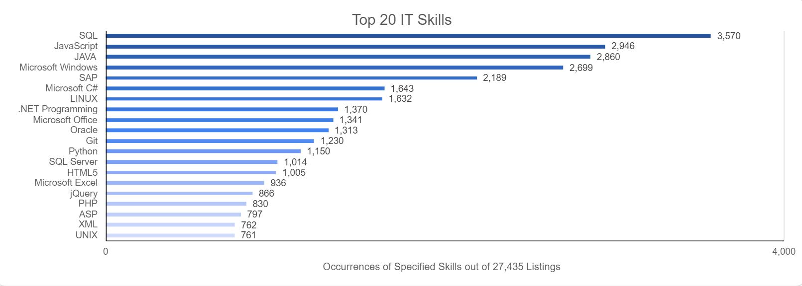
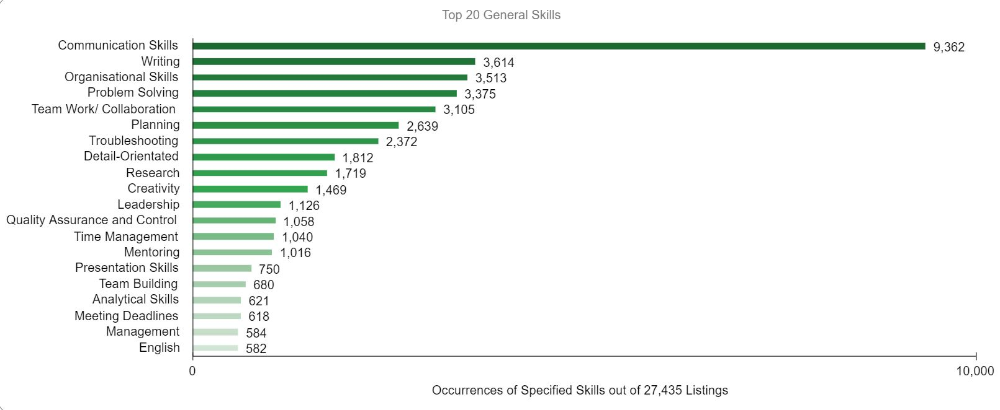
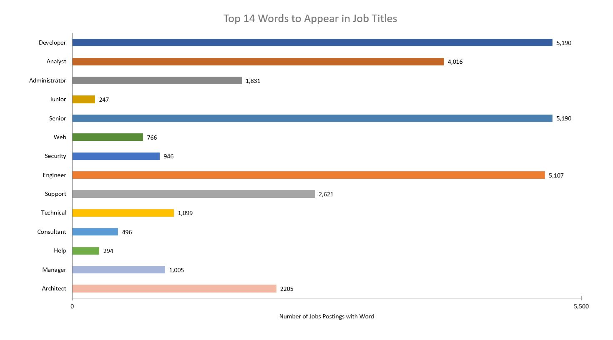
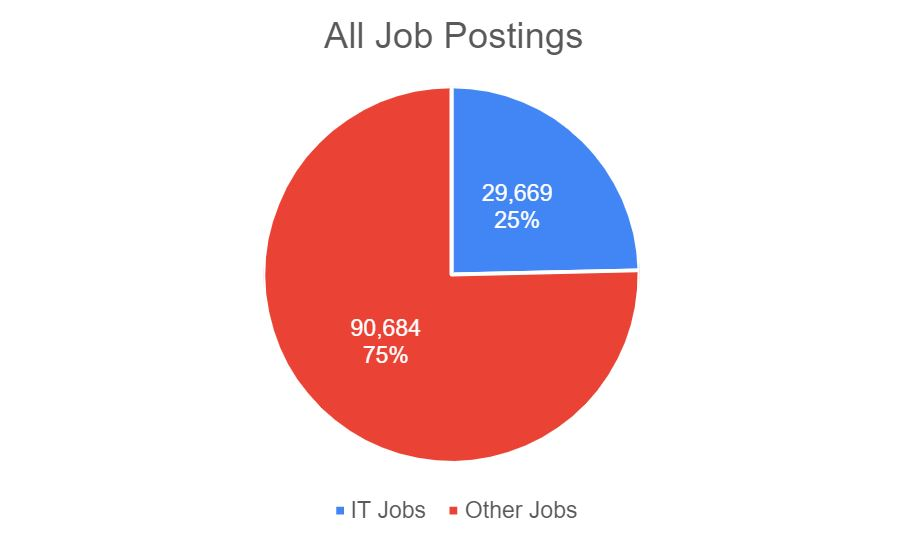

Burning Glass 1, 2018
Burning Glass 2, 2018
Burning Glass 3, 2018
Burning Glass 1, 2018
Burning Glass 1, 2018

Burning Glass 1, 2018
My chosen job was based on a posting for a “Front End Developer”.
Some of the IT-Specific skills from the original job description do appear in the Top 20 most requested skills. They include HTML, Python, and JavaScript. Amazon Web Services (AWS) is listed as the 67th most posted IT skill. I was unavailable to identify other relevant skills front the original posting. Some factors for this could be that the data is a few years old and given the rapid development in the IT sector, new required skills may have arisen. Nevertheless, this insight does illustrate that rather than focusing attention on learning specific skills from a specific job posting will not necessarily increase employability if they don’t even appear on this list. Another possibility could be that the specific posting could be for a niche industry requiring an IT specialist with knowledge of that industry.
The data from this set indicates that “Communication Skills” are the most demanded general skill by employers. It appears in over 30% off all job postings.
SQL, JAVA and Microsoft Windows are the top three highest-ranked IT-specific skills that did not appear in my required skill set for the job posting. I didn’t know there was a difference between Java and JavaScript but now I do. Given the similarity of their names, I would assume that if you knew one language you could learn the other with more ease. Then again it could be the same differences between Austria and Australia. I don’t know a lot about SQL aside from it being used in databases, I assume this skill would apply more so to data scientists or analysts.
Writing, Organisational Skills, and Research did not appear in my required skill set. To be fair I consider writing and organizational skills to be essential and should be assumed as a requirement for any job. I didn’t think research would appear so high but the more I think about it I can see why it’s important. To develop any kind of strategy, you need to be well informed on the topic you are dealing with and that required you to do some reading.
There has been some assurance that my ideal job does have positive employability prospects. Learning more about IT skills has given me a great deal of insight into the diversity and complexity of the IT industry. See what most frequently requested IT-specific skills do give me ideas on what things I should learn first before branching out into more niche areas of the industry.
My chosen Ideal Job was a “Systems Analyst” position based in Melbourne.
The role involves the inspection of a client’s in-place IT systems and providing recommendations to improve them. This is primarily done through board presentations and executive meetings. The role is almost exclusively independent and free form, which is something that I would appreciate much in a career.
According to the Burning Glass data (2018), ‘Systems Analyst’ appears 221 times in a total of 29669 job postings, which is around 0.8%. Therefore, it is safe to say that Systems Analysts are not very high in demand. This is somewhat expectable, as Systems Analysts require much prior experience with data-related technologies, according to my chosen job listing (SEEK n.d.).
This can technically be considered positive. The lack of available positions would indicate that there is little chance to obtain one. However, the high experience requirement confirms that the position would be much less competitive than other roles. Therefore, the chance would likely be higher than that of more saturated careers. The Australian Government’s Job Outlook indicates that there is a high chance of significant growth over the next five years, indicating a higher future demand (Australian Government n.d.).
According to Job Outlook (Australian Government n.d.), the skill requirement of the role is Very High. It generally requires an IT-related bachelor’s degree, of which I am studying. The skill requirement is not particularly surprising given the median annual pay of $110000 (SEEK n.d.). Most Systems Analysts are between the ages of 25 and 54, further hinting at the high level of experience required for a successful application.
Although there aren’t many specific IT skills required in the role, applicants must have a very broad understanding of many different mediums of IT. Job Outlook lists ‘Computers and Electronics’ as its highest skill requirement, with English and Mathematics as the second and third highest, respectively. My chosen job listing reflects this, describing its ideal applicant as a ‘jack of all trades’. Despite this, it is apparent that most of a Systems Analyst’s skill set would be data-related, including data systems, cloud technology and data representation.
The role requires excellent communication – both written and verbal – and customer service, along with strong organisation, attention to detail and critical thinking skills. According to the Burning Glass data (2018), the three highest skills in terms of demand are communication, organisation, and problem solving.
After reflecting upon this information, my opinion of my choice of career has changed somewhat. There are many necessary skills for a Systems Analyst compared to the other job ideas. A Systems Analyst would likely need to undergo more education and training than the other careers. There are also many skills that are not associated with software engineering or development, such as analysis, business systems and adaptability. As I am more proficient at programming than other IT skills, this may impact my ability to become a Systems Analyst. However, SEEK mentions that “Many Systems Analysts are also Programmers and are therefore also responsible for creating the code for software applications,” (SEEK n.d.). This may mean that my enthusiasm for programming may end up being a significant benefit in my career.
Australian Government n.d., Systems Analysts, Australian Government, viewed 20th September 2021 <https://joboutlook.gov.au/occupations/systems-analysts?occupationCode=261112>
SEEK n.d., How to become a Systems Analyst - Salary, Qualifications, skills & Reviews, viewed 16th September 2021 <https://www.seek.com.au/career-advice/role/systems-analyst>
My chosen job coming into this project was a “Software Engineer”.
When compared to the Top 20 IT Job Titles (Burning Glass 1, 2018) it ranks at no. 11. From 29,669 postings 539 were titled as Software Engineer postings. This makes up about 1.81% of total job postings being targeted at Software Engineers. Solution Architect which was the job title with the highest number of posts. This made it the job with the highest demand within our data and it had a total of 987 posts out of the 29,669 total posts. This equates to 3.34% of job postings being targeted to Solutions Architects. Whilst Solution Architects have almost double the demand of Software Engineers as they both appear within the Top 20 one could infer that they are both quite in demand within the IT sector.
From my brief research into the role of a software Engineer for Assignment 1 I had a shortlist of requirements for the role that included both front-end and back-end development. However generally speaking most software developers will be primarily dealing with back-end development. Back-end development requires knowledge of different programming languages that can change depending on the project being undertaken. Java, JavaScript, C#, Python, AWS and Typescript are a few of the most common programming languages that employers will be looking for (Seek, 2021). When compared to the list of Top 20 IT skills (Burning Glass 2, 2018) JavaScript, Java and C# all appear within the top 6 IT Skills with JavaScript and Java occupying positions 2 and 3 respectively. Python also appears at the no. 12 position.
Communication, Teamwork, Problem Solving, Multitasking and Attention to Detail are common soft skills that software engineer roles require (Indeed Editorial Team, 2020). When compared to demand for general skills, communication, problem solving and teamwork are in the top 5 most demanded general skills in job postings (Burning Glass 3, 2018). Attention to detail is also within the top 10. In my opinion most of the skills listed within the top general skills are all skills that one requires to be an effective member of a workplace. From the data one can infer software engineers' posses (or require) general skills that are often held in high demand from employers.
The three highest ranking IT specific skills that a software engineer would not be required to know are SQL, SAP & Oracle. All three of these skills are related to databases and data processing. Hence it is easy to see why these are not inherently essential in a software engineering role.
Writing, Planning and Research are the three highest ranked general skills that are not a requirement for a software engineer. If I was to comment on as to why this is the case, I could infer that these skills are generally those undertaken by people in leadership/senior roles. These general skills are more pertinent to project management roles than software development.
Having spent time looking at job data I don’t think my opinion on my ideal job has changed. I have a clearer picture as to what the role of a software engineer details and I think it is entirely possible that my opinion can still change in the future. Compared to my earlier requirements for the job’s skill set in Assignment 1, I can see that front-end development is not always a necessity for a software engineer. Whilst that is something I do think I will enjoy I always knew the bigger body of work for a software engineer will be through back-end development. Furthermore there is no substitute for real life experience to really get the full picture of what being a software engineer entails. Thus during my time spent analysing the Burning Glass data the conclusions I was able to draw are in line with what I was expecting the role to require and for now I have not changed my opinion on my ideal job.
Seek 2021, Software Engineer, Seek Limited, viewed 15 August 2021, <https://www.seek.com.au/career-advice/role/software-engineer>.
Indeed Editorial Team 2020, Software Engineer Skills: Definition and Examples, Indeed, viewed 15 August 2021, <https://www.indeed.com/career-advice/career-development/software-engineer-skills>.
My chosen ideal job at the moment is a “Software Engineer”.
The required skills from my ideal job have a generally broad spread, with skills such as SQL, JAVA/JavaScript and Python being in the top 20. However, languages such as Scala and OCaml don’t fall into the top 20 list of IT skills. This doesn’t necessarily mean that these languages aren’t worth learning, in fact employers are more likely to pay higher salaries or agree to more lucrative contracts for programmers that possess these “niche” languages as well as mastering the “usuals” (Python, JAVA, SQL etc..). As the supply of programmers and engineers that know the “usuals” is generally much higher than the supply of “niche” or newer languages, it could be inferred that employers are willing to pay higher for in demand skills that are scarcer.
The general skills are sought after by employers of high skill jobs, not just in IT, seem to all be very similar. Communication, leadership, problem solving, and teamwork are crucial for success in most fields, and that’s no exception in the IT world. In the IT realm we have a lot of “locked in Mum’s basement, with the giga brains” and I know its just a stereotype but there’s certainly some truth in it, from speaking to various of professionals and interviews it is clear that there is a lower general level for skills such as communication and leadership. Having these skills would allow you to be an attractive prospect for employers and would inherently allow you more opportunities, as it seems a lot of management positions have a shifted focus on team managing, communication and guidance rather than solely knowing all the IT skills.
SAP, Oracle and SQL and don’t seem to be required or looked for in my Ideal Job listings as they have more of a database driven focus, however, that doesn’t mean that there won’t be software engineering jobs that might need a proficient understanding of these skills.
It may be only mentoring and research that aren’t looked for in the Top 20 General skills.
A lot of the things in the list aren’t mentioned in the listing but I feel that in a position of seniority you would understand that time management/meeting deadlines, leadership and creativity are non-negotiables and the bare minimum for people who strive to progress themselves as well as their career.
Looking at the Burning Glass data has been quite interesting, but I don’t think it’s the best thing to base my career change on. If there are 3,750 mentions of SQL that doesn’t necessarily mean that those job listings pay more or will stay relevant for longer than a skill that has under 500 mentions. I know data and statistics is a powerful tool, but it must be presented and communicated in combination with other sources (IT professionals or even personal interests).
I feel that the Top 20 General Skills list has been more beneficial as it allows me to see what skills are crucial without shoehorning myself into a specific field of IT. I have definitely kept an open mind to the data, but I’m not sure if it's still relevant in two years, five years or 10 years, and because of that I don’t want to use it as a crutch to change my whole perception on today’s data with the future exponentially evolving.
Burning Glass 1 2018, Top Titles, datafile, Burning Glass International Inc., USA, viewed 13 August 2021, <https://rmit.instructure.com/courses/79904/files/19724564/download?wrap=1>.
Burning Glass 2 2018, Skills in Greatest Demand (Specialised Skills), datafile, Burning Glass International Inc., USA, viewed 13 August 2021, <https://rmit.instructure.com/courses/79904/files/19724567/download?wrap=1>.
Burning Glass 3 2018, Skills in Greatest Demand (Baseline Skills), datafile, Burning Glass International Inc., USA, viewed 13 August 2021, <https://rmit.instructure.com/courses/79904/files/19724567/download?wrap=1>.